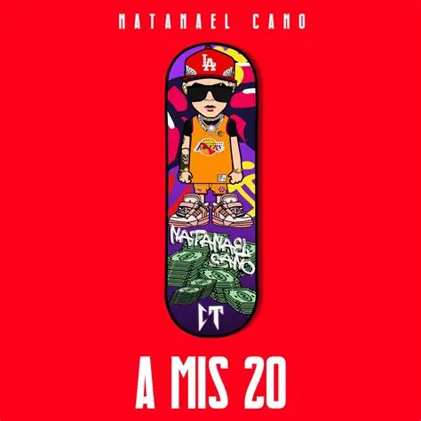

Natanael Cano es un cantante, compositor y rapero mexicano, reconocido como uno de los principales impulsores de los corridos tumbados, un subgénero que mezcla el corrido tradicional con trap, hip-hop y sonidos urbanos.
Nació el 27 de marzo de 2001 en Hermosillo, Sonora. Desde muy joven mostró interés por la música y aprendió a tocar la guitarra de forma autodidacta, inspirado por los corridos clásicos, pero también por el rap y el trap que escuchaba en internet. Durante su adolescencia empezó a subir canciones a YouTube, donde llamó la atención por su estilo crudo, letras directas y una forma distinta de cantar corridos.
Sus inicios fueron totalmente independientes: grababa desde casa y hablaba de su realidad, sus aspiraciones y la vida del barrio. El punto de quiebre llegó cuando su propuesta empezó a viralizarse y más tarde colaboró con artistas consolidados del regional mexicano, lo que lo llevó a un público mucho más amplio.
Hoy, Natanael Cano es visto como una figura clave en la evolución del regional mexicano, especialmente entre las nuevas generaciones, por romper reglas y crear un sonido que conecta la tradición con lo urbano.
Los mejores proyectos de Nata
Nombre
Año de lanzamiento
Portada
Por que la demora
2025
Natakong
2024
A mis 20
2019

LOS CT
¿Qué son los CT?
Los CT, abreviatura de Corridos Tumbados, son un subgénero musical del regional mexicano que combina el corrido tradicional con sonidos modernos como el trap, el rap y la música urbana. Este estilo se caracteriza por mantener la estructura narrativa del corrido —historias sobre la vida personal, el éxito, el barrio o experiencias difíciles— pero con una interpretación más relajada, juvenil y con beats influenciados por el hip-hop.
El movimiento fue impulsado principalmente por Natanael Cano, quien ayudó a popularizar el término “CT” entre sus seguidores. Gracias a esta fusión de géneros, los corridos tumbados conectaron con nuevas generaciones, convirtiéndose en una tendencia importante dentro de la música mexicana actual.
Numeros a los que ha llegado nata al paso de los años